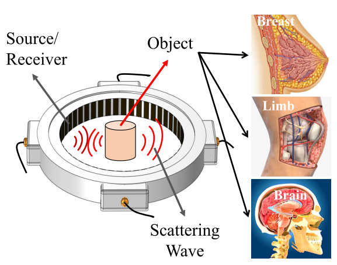

USCTBench is a project that supports research in Ultrasound Computed Tomography (USCT) technology by providing a large-scale, high-fidelity multi-frequency USCT breast imaging dataset, comprising 72,000 meticulously paired sound speed and wavefield data sets that simulate diverse breast anatomies from real USCT system parameters. The dataset aims to advance USCT image reconstruction techniques and benchmark the performance of various deep learning methods through standardized evaluation metrics.
USCT dataset is divided into Forward Modeling Dataset and Inverse Problem Dataset as shown in Table. It is worth mentioning that in order to enhance the generalization ability, we add 200 samples of uniform wave velocity field in the Forward Modeling Datset. For each phantom in our dataset, wave fields have been meticulously simulated in nine frequencies (300k,350k...,750k Hz), taking into account 256 distinct sources distributed across the USCT's annular transducer array. This simulation process is powered by a dedicated Helmholtz equation solver, ensuring that the generated wavefields are both accurate and reflective of real-world USCT operations.
| Dataset | Size | #Train #Test | Input data size | Output data size |
|---|---|---|---|---|
| Forward Modeling Dataset | 8115G | 7400/800 | (480,480) | (256,256) |
| Inverse Problem Dataset | 42G | 7200/800 | (64,480,480) | (480,480) |
USCTBench serves as a pivotal platform for conducting impartial comparisons among various methods. Our evaluation encompasses five exemplary methods (UNet, FNO, BFNO, AFNO, and MGCNN) applied to the Forward Modeling task, as well as an assessment of four prevalent methods (NIO, FCNN, DeepONet, and InversionNet) against the Inversion Problem task. The experiments is showed in the following table.
If you have any questions or need our dataset for research value, please feel free to contact us.
Email: contact@usctbench.com